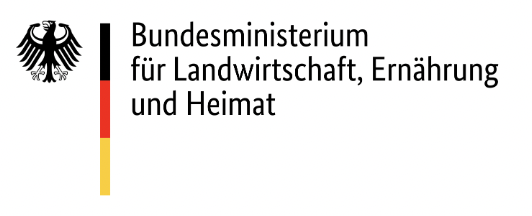
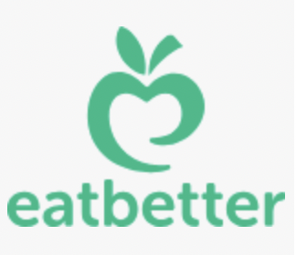
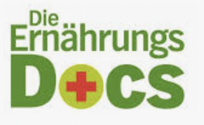
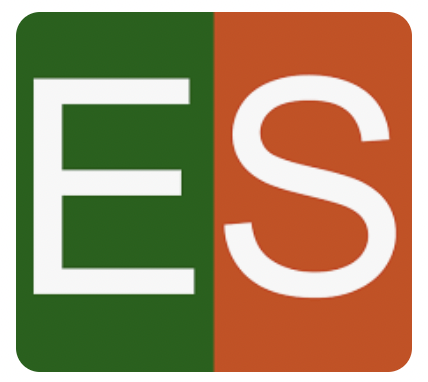

Empfohlene Ernährungsplattformen

BMEL
Infos vom Bundesministerium für Ernährung und Landwirtschaft.
Verbraucherinnen und Verbraucher bekommen in Deutschland ein breites Angebot an qualitativ hochwertigen Lebensmitteln. Gesundes Essen ist Genuss – und eine ausgewogene Ernährung ist das beste Rezept für eine gute Gesundheit. Das Bundesministerium für Ernährung und Landwirtschaft (BMEL) verfolgt eine ganzheitlich ausgerichteten Politik für eine gesunde Ernährung.
Gutekueche.de
Gesunde & Bio-Rezepte zum Nachkochen.
Die Website von GuteKueche.de ist ein Rezept Portal und bietet kostenlose Koch- und Backrezepte, Rezepte für Cocktails und listet Restaurants und Gastronomiebetriebe sowie Infos zu Wein und Winzer aus ganz Deutschland.

EatBetter
Nachhaltige Ernährung leicht gemacht.
Einfach, genussvoll und dabei gesund und nachhaltig: Das ist die Idealvorstellung in Sachen Ernährung für uns und für immer mehr Menschen. Doch trotz des wachsenden Trends ist es nicht leicht, aufgrund der Masse an Informationen, zu wenig vertrauenswürdiger Quellen und mangelnder Orientierungshilfe, den Überblick zu behalten. eatbetter setzt genau hier an, schafft Klarheit mit verlässlicher Qualität und hohem Nutzwert. Wir möchten Orientierung im Ernährungsdschungel geben und dadurch gutes Essen "demokratisieren": Gesund kann einfach und lecker sein!

Ernährungs-Docs (NDR)
Medizinisch geprüfte Rezepte & Tipps.
Wir lieben gesunde Ernährung
Die Ernährungs-Docs, allesamt erfahrene Mediziner, wollen mit gezielten Ernährungsstrategien Symptome deutlich verbessern und Krankheiten sogar heilen.
BZfE
Wissenschaftlich fundierte Ernährungshinweise.
Genuss und Vielfalt mit pflanzlichen Lebensmitteln
Pflanzliche Lebensmittel spielen die Hauptrolle bei einer pflanzenbetonten Ernährung. Tierische Lebensmittel werden ergänzt. Das schützt die Gesundheit, schont die Erde und bietet Vielfalt.

EatSmarter
Gesunde, einfache Rezepte für jeden Tag.
Finden Sie über 100.000 gesunde Rezepte auf EAT SMARTER. Auf dieser Seite haben wir die wichtigsten Rezeptkategorien für Sie aufgelistet. Viele dieser gesunden Rezepte wurden von Profiköchen und Food-Experten entwickelt und haben den aufwändigen EAT SMARTER-Foodcheck durchlaufen. Dabei wurden die Rezepte auf Herz und Nieren geprüft und im Zweifel noch einmal verändert.
DGE Empfehlungen
Deutsche Gesellschaft für Ernährung – wissenschaftlich geprüft.
Bunt und gesund essen und dabei die Umwelt schonen, das sind die DGE-Empfehlungen. Wer sich überwiegend von Obst und Gemüse, Vollkorngetreide, Hülsenfrüchten sowie Nüssen und pflanzlichen Ölen ernährt, schützt nicht nur seine Gesundheit, sondern schont dabei die Ressourcen der Erde.